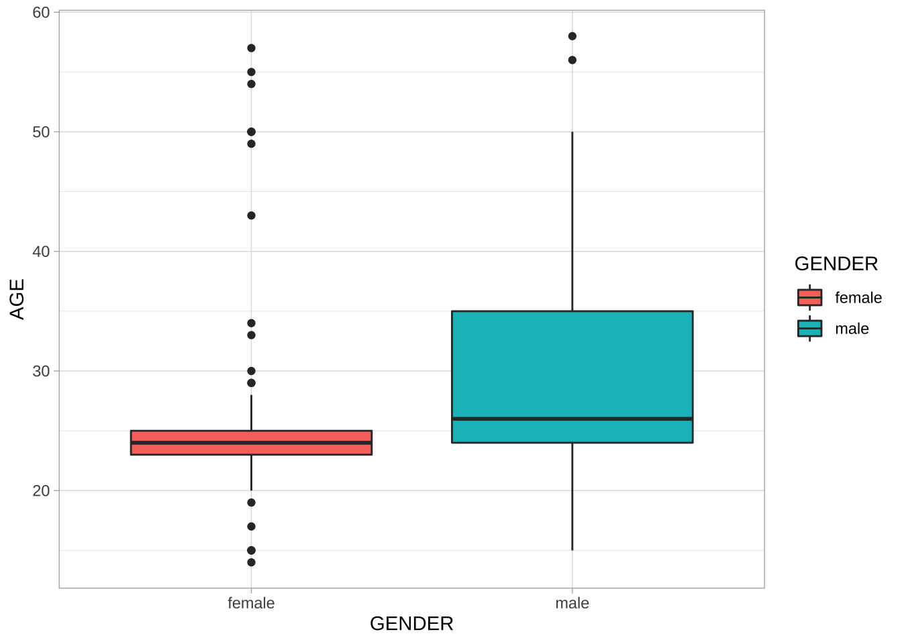
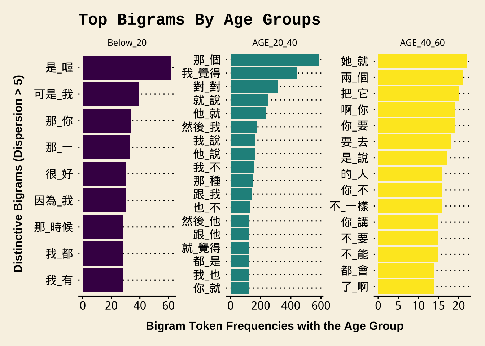

Chapter 10 Structured Corpus
library(tidyverse)
library(readtext)
library(tidytext)
library(quanteda)There are a lot of pre-collected corpora available for linguistic studies. Unlike self-collected text corpora, these structured corpora are usually provided in a structured format and the text data are often enriched with annotations. When presenting/distributing the structured corpus data, the corpus provider can determine the ultimate format and structure in which the users can access the text data.
Important factors usually include:
- Web Interface: An online interface for users to access the corpus data
- Annotation: Additional linguistic annotations at different levels
- Metadata: Additional demographic information for the corpus data
- Full-Text Availability: A commercial/non-commercial license to download the full-texts of the corpus data
- Full-Text Formats: The formats of the full-texts data
| Web Interface | Annotation | Metadata | Full-Text Availability |
Full-Text Formats |
|
|---|---|---|---|---|---|
| Capacities | GUI CQL Syntax |
POS LEMMA WordSeg |
Demographic Info Genre |
Commercial Academic License |
Texts XML JSON Textgrids XML |
| Sinica Corpus | ✓ | ✓ | ✓ | ✓ | XML |
| COCT | ✓ | ✓ | ✓ | ||
| COCA | ✓ | ✓ | ✓ | ✓ | Raw Texts |
| BNC2014 | ✓ | ✓ | ✓ | ✓ | XML |
| CHILDES | ? | ✓ | ✓ | ✓ | CHILDES |
| ICNALE | ✓ | ✓ | Raw Texts |
This chapter will demonstrate how you can load existing corpora in R and perform basic corpus analysis with these data. To facilitate the sharing of corpus data, the corpus linguistic community has now settled on a few common schemes for textual data storage and exchange. In particular, I would like to talk about two common types of corpus data representation: CHILDES (this chapter) and XML (Chapter 11).
10.1 NCCU Spoken Mandarin
In this demonstration, I will use the dataset of Taiwan Mandarin Corpus for illustration. This dataset, collected by Prof. Kawai Chui and Prof. Huei-ling Lai at National Cheng-Chi University (Chui et al., 2017; Chui & Lai, 2008), includes spontaneous face-to-face conversations of Taiwan Mandarin. The data transcription conventions can be found on the NCCU Corpus Official Website.
Generally, the NCCU corpus transcripts follow the conventions of CHILDES format. In computational text analytics, the first step is always to analyze the structure of the textual data.
10.2 CHILDES Format
The following is an excerpt from the file demo_data/data-nccu-M001.cha from the NCCU Corpus of Taiwan Mandarin. The conventions of CHILDES transcription include:
- The lines with header information begin with
@ - The lines with utterances begin with
* - The indented lines refer to the utterances of the continuing speaker turn
- Words are separated by white-spaces (i.e., a word-segmented corpus)
The meanings of transcription symbols used in the corpus can be found in the documention of the corpus.
10.3 Loading the Corpus
The corpus data are available in our demo_data/corp-NCCU-SPOKEN.tar.gz, which is a zipped archived file, i.e., one zipped tar file including all the corpus documents.
We can use the readtext::readtext() to load the data.
By default, readtext() assumes that the archived file consists of documents in .txt format.
In this step, we treat all the *.cha files as if they are normal text files (i.e. .txt) and load the entire corpus into a data frame with two columns: doc_id and text (The warning messages only warn you that by default readtext() takes only .txt files).
## Load corpus
NCCU <- as_tibble(readtext("demo_data/corp-NCCU-SPOKEN.tar.gz", encoding = "UTF-8"))10.4 From Text-based to Turn-based DF
Now the data frame NCCU is a text-based one, where each row refers to one transcript file in the corpus.
- Before we do further tokenization, we first need to concatenate all same-turn utterances (i.e., utterances with no speaker ID at the initial of the line) with their initial utterance of the speaker turn;
- Then we use
unnest_tokens()to transform the text-based DF into a turn-based DF.
## From text-based DF to turn-based DF
NCCU_turns <- NCCU %>%
mutate(text = str_replace_all(text,"\n\t"," ")) %>% # deal with same-speaker-turn utterances
unnest_tokens(turn, ## name for new unit
text, ## name for old unit
token = function(x) ## self-defined tokenizer
str_split(x, pattern = "\n"))
## Inspect first file
NCCU_turns %>%
filter(doc_id == "M001.cha")10.5 Metadata vs. Utterances
Lines starting with @ are the headers of the transcript while lines starting with * are the utterances of the conversation. We split our NCCU_turns into:
NCCU_turns_meta: a DF with all header linesNCCU_turns_utterance: a DF with all utterance lines
## Metadata DF
NCCU_turns_meta <- NCCU_turns %>%
filter(str_detect(turn, "^@")) ## extract all lines starting with `@`When extracting all the utterances of the speaker turns, we perform data preprocessing as well. Specifically, we:
- Create unique indices for every speaker turn
- Extract the speaker index of each speaker turn (
SPID) - Replace all pause tags with
<PAUSE> - Replace all extra-linguistic tags with
<EXTRACLING> - Remove all overlapping talk tags
- Remove all code-switching tags
- Remove duplicate/trailing/leading spaces
## Utterance DF
NCCU_turns_utterance <- NCCU_turns %>%
filter(str_detect(turn, "^\\*")) %>% ## extract all lines starting with `*`
group_by(doc_id) %>% ## create unique index for turns
mutate(turn_id = row_number()) %>%
ungroup %>%
tidyr::separate(col="turn", ## split SPID + Utterances
into = c("SPID", "turn"),
sep = ":\t") %>%
mutate(turn2 = turn %>% ## Clean up utterances
str_replace_all("\\([(\\.)0-9]+?\\)"," <PAUSE> ") %>% ## <PAUSE>
str_replace_all("\\&\\=[a-z]+"," <EXTRALING> ") %>% ## <EXTRALING>
str_replace_all("[\u2308\u2309\u230a\u230b]"," ") %>% ## overlapping talk tags
str_replace_all("@[a-z:]+"," ") %>% ## code switching tags
str_replace_all("\\s+"," ") %>% ## additional white-spaces
str_trim())The turn-based DF, NCCU_turns_utterance, includes the utterances of each speaker turn as well as the doc_id, turn_id and the SPID. All these unique indices can help us connect each utterance back to the original conversation.
## Turns of `M001.cha`
NCCU_turns_utterance %>%
filter(doc_id == "M001.cha") %>%
select(doc_id, turn_id, SPID, turn, turn2)10.6 Word-based DF and Frequency List
Because the NCCU corpus has been word segmented, we can easily transform the turn-based DF into a word-based DF using unnest_tokens(). The key is that we need to specify our own tokenization function token = ....
The word tokenization now is simple – tokenize the utterance into words based on the delimiter of white-spaces.
## From turn DF to word DF
NCCU_words <- NCCU_turns_utterance %>%
select(-turn) %>% ## remove raw text column
unnest_tokens(word, ## name for new unit
turn2, ## name for old unit
token = function(x) ## self-defined tokenizer
str_split(x, "\\s+"))
## Check
NCCU_words %>%
head(100)With the word-based DF, we can create a word frequency list of the NCCU corpus.
## Create word freq list
NCCU_words_freq <-NCCU_words %>%
count(word, doc_id) %>%
group_by(word) %>%
summarize(freq = sum(n), dispersion = n()) %>%
arrange(desc(freq), desc(dispersion))
## Check
NCCU_words_freq %>%
head(100)With word frequencies, we can generate a word cloud to have a quick overview of the word distributions in NCCU corpus.
## Create Wordcloud
require(wordcloud2)
NCCU_words_freq %>%
filter(str_detect(word, "^[^<a-z]")) %>% ## remove annotations/tags
select(word, freq) %>%
top_n(150, freq) %>% ## plot top 150 words
mutate(freq = sqrt(freq)) %>% ## deal with Zipfian distribution
wordcloud2(size=0.6)10.7 Concordances
If we need to identify turns with a particular linguistic unit, we can make use of the data wrangling tricks to easily extract speaker turns with the target pattern.
We can make use of regular expressions again to extract more complex constructions and patterns from the utterances.
## extracting particular patterns
NCCU_turns_utterance %>%
filter(str_detect(turn2, "覺得"))NCCU_turns_utterance %>%
filter(str_detect(turn2, "這樣子"))Exercise 10.1 If we are interested in the use of the verb 覺得, after we extract all the speaker turns with the verb 覺得, we may need to know the subjects that often go with the verb.
Please identify the word before the verb for each concordance token as one independent column of the resulting data frame (see below). Please note that one speaker turn may have more than one use of
覺得.Please create a barplot as shown below to summarize the distribution of the top 10 frequent words that directly precedes 覺得.
Among the top 10 words, you would see “的 覺得” combinations, which are counter-intuitive. Please examine these tokens and explain why.

Alternatively, we can also create a tokens object and apply the kwic() from quanteda for concordance lines:
## Quanteda `tokens` object
NCCU_tokens<- NCCU_turns_utterance$turn2 %>%
str_split("\\s+") %>% ## split into word-based list
as.tokens ## list2tokens
## check token numbers
sum(sapply(NCCU_tokens, length)) ## based on `tokens`[1] 194670nrow(NCCU_words) ## based on `unnest_tokens`[1] 194670## We can add docvars to `tokens`
docvars(NCCU_tokens)<- NCCU_turns_utterance[,c("doc_id","SPID", "turn_id")] %>%
mutate(Text = doc_id)
## KWIC
kwic(NCCU_tokens, "覺得", 8)kwic(NCCU_tokens, "機車", 8)10.8 Collocations (Bigrams)
Now we extend our analysis beyond single words.
Please recall the tokenizer_ngrams() function we have defined in Chapter 7.
## self defined ngram tokenizer
tokenizer_ngrams <-
function(texts,
jiebar,
n = 2 ,
skip = 0,
delimiter = "_") {
texts %>% ## chunks-based char vector
segment(jiebar) %>% ## word tokenization
as.tokens %>% ## list to tokens
tokens_ngrams(n, skip, concatenator = delimiter) %>% ## ngram tokenization
as.list ## tokens to list
}The function tokenizer_ngrams() tokenizes the texts into word vectors using jiebaR and based on the word vectors, it extracts the ngram vectors from each text.
In other words, it assumes that the input texts have NOT been word segmented. We can create a similar ngram tokenizer for our current NCCU corpus data:
## Self-defined ngram tokenizer
tokenizer_ngrams_v2 <-
function(texts,
n = 2 ,
skip = 0,
delimiter = "_") {
texts %>% ## chunks-based char vector
str_split(pattern = "\\s+") %>% ## word tokenization
as.tokens %>% ## list to tokens
tokens_ngrams(n, skip, concatenator = delimiter) %>% ## ngram tokenization
as.list ## tokens to list
}We use the self-defined tokenization function together with unnest_tokens() to transform the turn-based DF into a bigram-based DF.
## From turn DF to bigram DF
system.time(
NCCU_bigrams <- NCCU_turns_utterance %>%
select(-turn) %>% ## remove raw texts
unnest_tokens(bigrams, ## name for new unit
turn2, ## name for old unit
token = function(x) ## self-defined tokenizer
tokenizer_ngrams_v2(
texts = x,
n = 2))%>%
filter(bigrams!="")
) user system elapsed
0.548 0.135 0.386 NCCU_bigrams %>%
filter(doc_id == "M001.cha")Please note that when we perform the n-gram tokenization, we take each speaker turn as our input. This step is important because this would make sure that we don’t get bigrams that span different speaker turns.
To determine significant collocations in conversation, we can compute the relevant distributional statistics for each bigram type, including:
- Frequencies
- Dispersion
- Collocation Strength (Lexical Associations)
We first compute the frequencies and dispersion of all bigrams types:
## Bigram Joint Frequency & Dispersion
NCCU_bigrams_freq <- NCCU_bigrams %>%
count(bigrams, doc_id) %>%
group_by(bigrams) %>%
summarize(freq = sum(n), dispersion = n()) %>%
arrange(desc(freq), desc(dispersion))
## Check
NCCU_bigrams_freq %>%
top_n(100, freq)## Check (para removed)
NCCU_bigrams_freq %>%
filter(!str_detect(bigrams, "<")) %>%
top_n(100, freq)Exercise 10.2 In the above example, we compute the dispersion based on the number of documents where the bigram occurs. Please note that the dispersion can be defined on the basis of the speakers as well, i.e., the number of speakers who use the bigram at least once in the corpus.
How do we get dispersion statistics like this? Please show the top frequent 100 bigrams and their SPID-based dispersion statistics.To compute the lexical associations, we need to:
- remove bigrams with para-linguistic tags
- exclude bigrams of low dispersion
- get necessary observed frequencies (e.g., w1 and w2 frequencies)
- get expected frequencies (for more advanced lexical association metrics)
## Computing lexical associations
NCCU_bigrams_freq %>%
filter(!str_detect(bigrams, "<")) %>% ## remove bigrams with para tags
filter(dispersion >= 5) %>% ## set bigram dispersion cut-off
rename(O11 = freq) %>%
tidyr::separate(col="bigrams", ## split bigrams into two columns
c("w1", "w2"),
sep="_") %>%
## Obtain w1 w2 freqs
mutate(R1 = NCCU_words_freq$freq[match(w1, NCCU_words_freq$word)],
C1 = NCCU_words_freq$freq[match(w2, NCCU_words_freq$word)]) %>%
## compute expected freq of bigrams
mutate(E11 = (R1*C1)/sum(O11)) %>%
## Compute lexical assoc
mutate(MI = log2(O11/E11),
t = (O11 - E11)/sqrt(E11)) %>%
mutate_if(is.double, round,2) -> NCCU_collocations
## Check
NCCU_collocations %>%
arrange(desc(dispersion), desc(MI)) # sorting by MINCCU_collocations %>%
arrange(desc(dispersion), desc(t)) # sorting by t10.9 N-grams (Lexical Bundles)
We can also extend our analysis to n-grams of larger sizes, i.e., the lexical bundles.
## Turn to 4-gram DF
system.time(
NCCU_ngrams <- NCCU_turns_utterance %>%
select(-turn) %>% ## remove raw texts
unnest_tokens(ngram, ## name for new unit
turn2, ## name for old unit
token = function(x) ## self-defined tokenizer
tokenizer_ngrams_v2(
texts = x,
n = 4))%>%
filter(ngram != "") ## remove empty tokens (due to the short lines)
) user system elapsed
0.998 0.246 0.597 ## 4-gram Frequency List
NCCU_ngrams %>%
count(ngram, doc_id) %>%
group_by(ngram) %>%
summarize(freq = sum(n), dispersion = n()) %>%
arrange(desc(dispersion), desc(freq)) %>%
ungroup %>%
filter(!str_detect(ngram,"<")) -> NCCU_ngrams_freq
## Check
NCCU_ngrams_freq %>%
filter(dispersion >= 5)10.10 Connecting SPID to Metadata
So far the previous analyses have not used any information of the transcripts’ headers (metadata). In other words, the connection between the utterances and their corresponding speakers’ profiles are not transparent in our current corpus analysis.
However, for socio-linguists, the headers of the transcripts can be very informative.
For example, in the NCCU_turns_meta, we have more demographic information of the speakers, which allows us to further examine the linguistic variations on various social factors (e.g., areas, ages, gender etc.)
## Utterances of `M001.cha`
NCCU_turns_utterance %>%
filter(doc_id == "M001.cha")## Metadata information of speakers in `M001.cha`
NCCU_turns_meta %>%
filter(doc_id == "M001.cha")10.11 Processing Corpus Headers
In this section, I would like to demonstrate how to extract speaker-related information from the headers (i.e., NCCU_turns_meta) and link these speaker profiles to our corpus data (i.e., NCCU_turns_utterance).
- In the headers of each transcript, the demographic profiles of each speaker are provided in the lines starting with
@id:\t; - Each piece of information is separated by a pipe sign
|in the line.
All speakers’ profiles in the corpus follow the same structure.
NCCU_turns_meta %>%
filter(str_detect(turn, "^@(id)"))To parse the demographic data of the speaker profiles in the turn column of NCCU_turns_meta, we can:
- Extract all lines starting with
@id - Separate the metadata string into several columns using
| - Select relevant columns (speaker profiles)
- Rename the columns
- Create unique IDs for each speaker of each transcript
## Extract metadata for all speakers
NCCU_meta <- NCCU_turns_meta %>%
filter(str_detect(turn, "^@(id)")) %>% ## extract all ID lines
separate(col="turn", ## split SP info
into=str_c("V",1:11, sep=""),
sep = "\\|") %>%
select(doc_id, V2, V3, V4, V5, V7, V10) %>% ## choose relevant info
mutate(DOC_SPID = str_c(doc_id, V3, sep="_")) %>% ## unique SPID
rename(AGE = V4, ## renaming columns
GENDER = V5,
GROUP = V7,
RELATION = V10,
LANG = V2) %>%
select(-V3) %>% ## remove irrelevant column
mutate(AGE = as.integer(str_replace(AGE,";",""))) ## chr to integer
NCCU_metaWith the above demographic data frame of all speakers in NCCU, we can now explore the demographic distributions of the corpus.
## Gender by age distribution
NCCU_meta %>%
ggplot(aes(GENDER, AGE, fill = GENDER)) +
geom_boxplot() +
theme_light()
## Relation distribution
NCCU_meta %>%
count(RELATION) %>%
ggplot(aes(reorder(RELATION, n), n, fill = n)) +
geom_col() + coord_flip() +
labs(y = "Number of Speakers",
x = "Relation") +
scale_fill_gradient(guide = "none") +
theme_light() 
10.12 Sociolinguistic Analyses
Now with NCCU_meta and NCCU_turns_utterance, we can now connect each utterance to a particular speaker (via `doc_id and SPID in NCCU_turns_utterance and DOC_SPID in NCCU_meta) and therefore study the linguistic variation across speakers of different demographic backgrounds. The steps are as follows:
- We first extract the patterns we are interested in from
NCCU_turns_utterance; - We then connect the concordance tokens to their corresponding SPID profiles in
NCCU_meta; - We analyze how the patterns vary according to speakers of different profiles.
NCCU_turns_utterance %>%
filter(doc_id == "M001.cha")For example, we can look at bigram usage patterns by speakers of varying age groups. The analysis requires the following steps:
- We retrieve target bigrams from
NCCU_bigrams - We generate new indices
DOC_SPIDfor all bigram tokens extracted - We map the
DOC_SPIDtoNCCU_metato get the speaker profiles of each bigram token usingleft_join() - We recode the speaker’s age into a three-level factor for more comprehensive analysis (i.e.,
AGE_GROUP) - For each age group, we compute the bigram frequencies and dispersion (i.e., the number of speakers using the bigram)
## Analyzing bigram use by age
NCCU_bigrams_with_meta <- NCCU_bigrams %>% ## bigram-based DF
filter(!str_detect(bigrams, "<")) %>% ## remove bigrams with para tags
mutate(DOC_SPID = str_c(doc_id, ## Create `DOC_SPID`
str_replace_all(SPID, "\\*", ""),
sep = "_")) %>%
left_join(NCCU_meta, ## Link to meta DF
by = c("DOC_SPID" = "DOC_SPID")) %>%
mutate(AGE_GROUP = cut( ## relevel AGE
AGE,
breaks = c(0, 20, 40, 60),
label = c("Below_20", "AGE_20_40", "AGE_40_60")
))
## Check
head(NCCU_bigrams_with_meta,50)## Bigram Frequency & Dispersion List by Age_Group
NCCU_bigrams_by_age <- NCCU_bigrams_with_meta %>%
count(bigrams, AGE_GROUP, DOC_SPID) %>%
group_by(bigrams, AGE_GROUP) %>%
summarize(freq = sum(n), ## frequency
dispersion = n()) %>% ## dispersion (speakers)
filter(dispersion >= 5) %>% ## dispersion cutoff
ungroup
## Bigram freq & dispersion by age
NCCU_bigrams_by_ageExercise 10.4 Based on the above bigrams from each age group (whose dispersion >= 5), please choose the top 30 bigrams from each group according their frequencies in each age group and identify the distinctive bigrams for each age group.
The distinctive bigrams are defined as follows:
- Remove bigrams that show up in the top 30 bigrams of all age groups;
- The age group in which the bigram shows the highest frequency is considered its preferred age group.
Based on the above naive distributional criteria, determine a set of distinctive bigrams for each age group and visualize them in bar plots as shown below.

In the above barplots, not all age groups show all the top 30 bigrams because we have removed the bigrams that show up in the top 30 list of all the age groups.
Exercise 10.5 Please create a barplot, showing the top 30 trigrams ranked according to their trigram token frequencies in male or female speakers. Similar to our example in the lecture notes, please consider only trigrams:
- that do not include paralinguistic tags;
- that have been used by at least FIVE different male or female speakers.